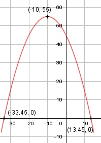

Aufgabe 10 f(x) = -0,1x2 - 2x + 45 f'(x) = -0,2x - 2, f''(x) = -0,2, f'''(x) = 0 Definitionsbereich: -∞ < x < ∞ Wertebereich: -∞ < f(x) ≤ 55 Asymptoten: - Symmetrie: - Nullstellen: -0,1x2 - 2x + 45 = 0 |:(-0,1) x2 + 20x - 450 = 0 p, q - Formel: p = 20, q = -450 x1,2 = x1,2 = -10 ± x1,2 = -10 ± x1,2 = -10 ± 23,45 x1 = 13,45 x2 = -33,45 N1(13,45|0), N2>(-33,45|0) Schnittpunkt mit der y-Achse: f(0) = -0,1 * 02 - 2 * 0 + 45 = 45 Sy(0|45) Extrempunkte: -0,2x - 2 = 0 |+0,2x 0,2x = -2 |:0,2 x = -10, f(-10) = -0,1 * (-10)2 - 2 * (-10) + 45 = 55 f''(x) = -0,2 < 0 --> Hochpunkt(-10|55) Alternativ: Scheitelpunktberechnung f(x) = -0,1x2 - 2x + 45 |:(-0,1) f(x) ------- = x2 + 20x - 450 -0,1 f(x) ------- = (x + 10)2 - 100 - 450 |*(-0,1) -0,1 f(x) = -0,1 * (x + 10)2 + 55 Wendepunkte: -0,2 = 0 --> Widerspruch, keine Wendepunkte Graph:
